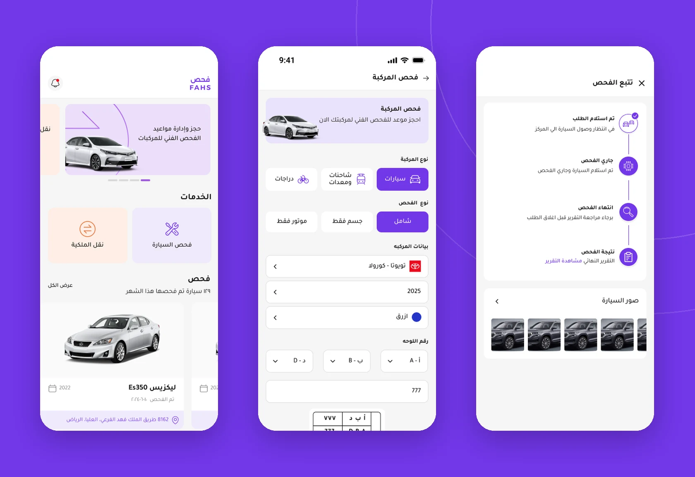
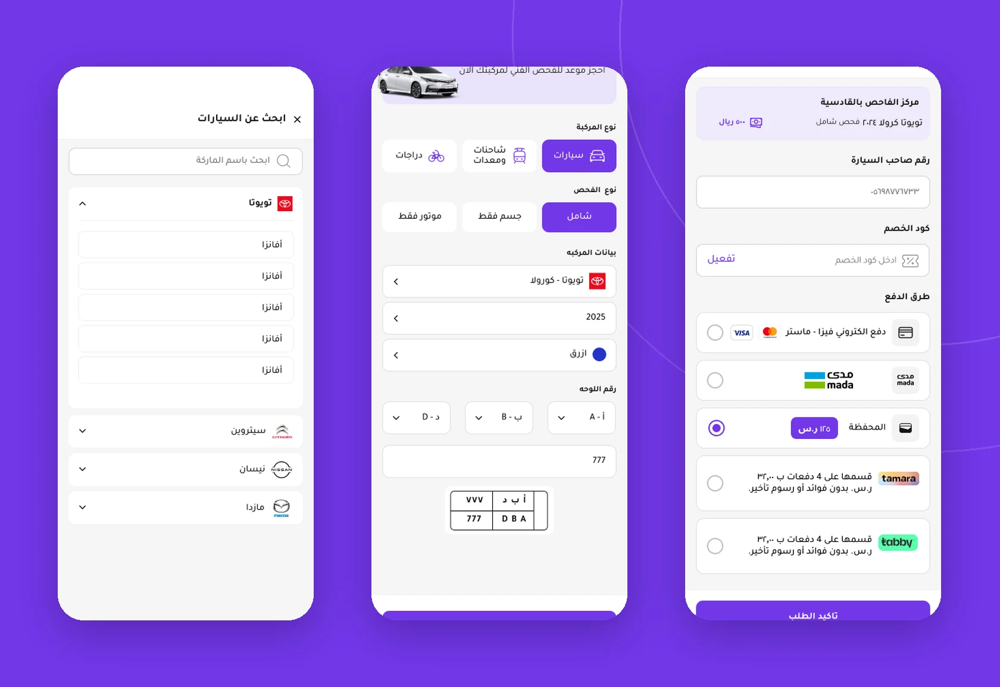
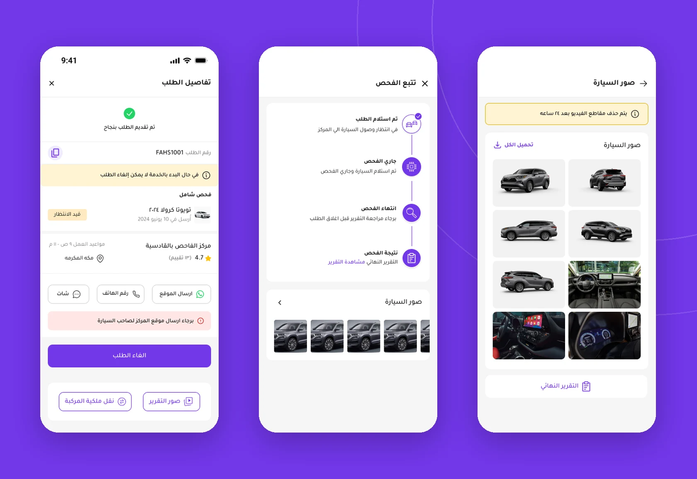
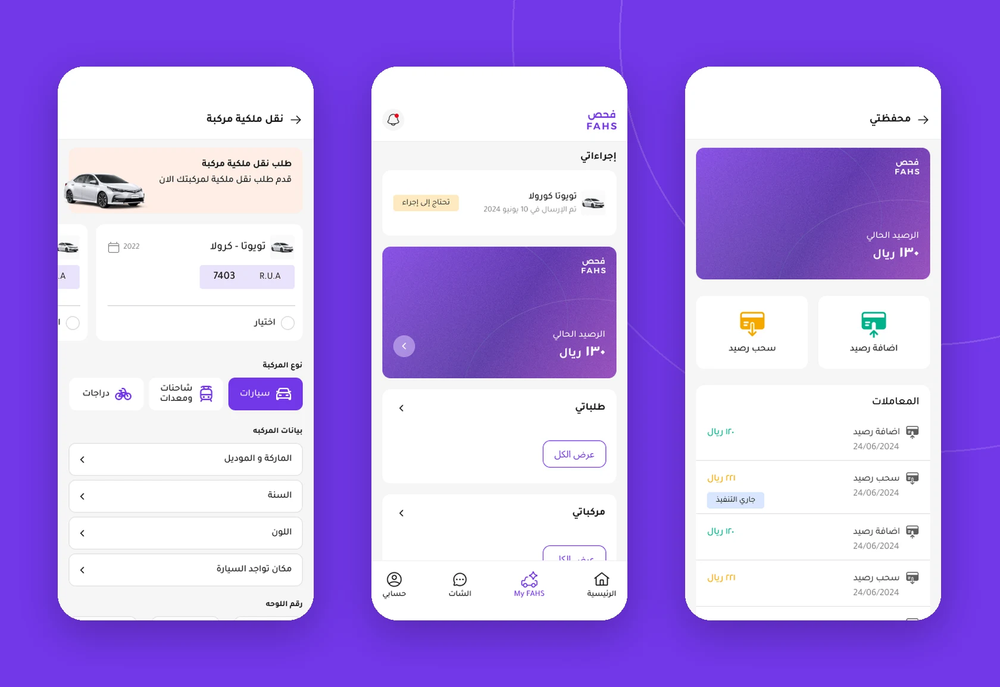

From inspection to ownership, in a few clear steps
Fahs is a Saudi app for booking a car's technical inspection and transferring its ownership. You book, pay, follow the car through the center and get the report on your phone. I designed it as senior product designer, and it shipped.
The short version
- Fahs books car inspections and ownership transfers in Saudi Arabia. Shipped.
- Booking is one screen: vehicle type and inspection type are one tap each, then make, year, color and plate.
- The plate input mirrors the real Saudi plate: Arabic letters with their Latin pair, and a live preview.
- Checkout offers card, mada, wallet, Tamara and Tabby, with the installment amount shown up front.
- A 4-step tracker follows the car through the center and ends with photos and the final report.
- Designed Arabic-first, entirely in Figma.
The whole journey, end to end




An errand that usually takes a day
Buying or selling a used car usually means an inspection first, then an ownership transfer. Fahs puts both in one app: book the inspection at a nearby center, follow it, get the report, and start the transfer from the same request.
The app serves two kinds of users from one sign-in screen: customers who book, and service providers who run the inspections.
A physical service, on a phone
An inspection is not a form you submit. The car has to get to a center, and the owner often isn't the one driving it there. So the app had to make booking fast and make the hours in between visible.
People need to know where it is and what happens next.
Three Arabic letters, their Latin pair, and a number.
mada and pay-later are as normal as Visa.
One screen, not a wizard
3A · ChoicesThe common answers are one tap each
Vehicle type (cars, trucks and equipment, motorcycles) and inspection type (full, body only, engine only) are chips at the top. Most bookings are the same few choices, so a multi-step wizard would only add screens. The whole request stays visible on one scroll.
3B · PlateType the plate the way it looks on the car
People copy the plate off the car, not from memory. So the input mirrors it: three letter pickers that show each Arabic letter with its Latin pair, a number field, and a live preview drawn like the real plate. A mistake shows up before you submit.
3C · Make and modelSearch, don't scroll
Brands have Arabic and English spellings, and a dropdown of every model is long. A searchable list with brand logos gets there faster, with an empty state for when nothing matches.
Pay the way people already pay
4A · PaymentFive options, one screen
Card, mada, wallet balance, Tamara and Tabby sit together, each with its logo. The pay-later options show the 4-installment amount right on the option, so the first question is answered before anyone taps.
4B · Rules up frontSay it before it matters
Once a center starts the inspection, the request can't be cancelled. That rule sits right above the cancel button, not in a dialog after the tap.
Show where the car is
After booking, the car is out of the owner's hands for hours. A 4-step tracker says what's happening at each point and what, if anything, the owner needs to do:
- Request received
- Car at the center, being inspected
- Inspection done, review the report
- Final report
The request screen also carries the center's hours, rating and location, with chat, call and "send location" for the owner. The report comes with car photos to view or download, and a note that videos are deleted after 24 hours, stated where people will see it.
Ownership, account and wallet
6A · TransferStart from a car you already added
The ownership transfer request opens with your saved vehicles and their plates, so a car you already inspected doesn't need typing again. Adding a new one uses the same form as booking.
6B · My FAHSWhat's waiting on you comes first
My FAHS opens with "My actions": anything that needs a response from you. Wallet balance, requests and vehicles follow. The wallet handles top-ups, withdrawals to a bank account and a transaction history.
Shipped in Saudi Arabia
The app shipped with 49 screens, from sign-in and booking to ownership transfer, wallet, support and notifications. Everything was designed in Figma, Arabic-first, with English as a switch in settings.
Two things I'd try next time
- Ask for the plate first. It's the one thing every user has in front of them. With the right data, it could fill in make, model and year.
- Test the tracker against real waits. Inspections take time. Push updates at each step need tuning to how long that really is.